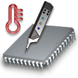
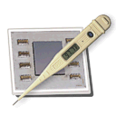

|  |
Copyright © 2003 – 2013 by Marcel Bresink Software-Systeme. Alle Rechte
vorbehalten.
Diese Programme sind durch internationale Urheberrechtsgesetze geschützt.
Die Software und die zugehörige Dokumentation dürfen ohne vorherige
schriftliche Zustimmung des Autors nicht weitervertrieben werden.
Apple, Macintosh, Power Mac, Power Macintosh, iMac, PowerBook, iBook und MacBook sind eingetragene Warenzeichen der Apple Inc. Analog Devices ist ein eingetragenes Warenzeichen der Analog Devices, Inc. Dallas Semiconductor ist ein eingetragenes Warenzeichen der Dallas Semiconductor Corporation. Hewlett-Packard, PA-RISC und VAX sind Warenzeichen der Hewlett-Packard Development Company. Intel, Pentium, i486, i860, Core Solo und Core Duo sind eingetragene Warenzeichen der Intel Corporation. Maxim ist ein eingetragenes Warenzeichen der Maxim integrated products. National Semiconductor ist ein eingetragenes Warenzeichen der National Semiconductor Corporation. nVidia ist ein eingetragenes Warenzeichen der NVIDIA Corporation. Mach ist ein Forschungsprojekt der Carnegie-Mellon University. Motorola und AltiVec sind Warenzeichen der Motorola, Inc. IBM und PowerPC sind eingetragene Warenzeichen der International Business Machines Corporation. ATI und RADEON sind eingetragene Warenzeichen der ATI Technologies, Inc. Logitech ist ein eingetragenes Warenzeichen von Logitech. Waren- oder Leistungsmarken werden nur zu Identifikationszwecken verwendet.